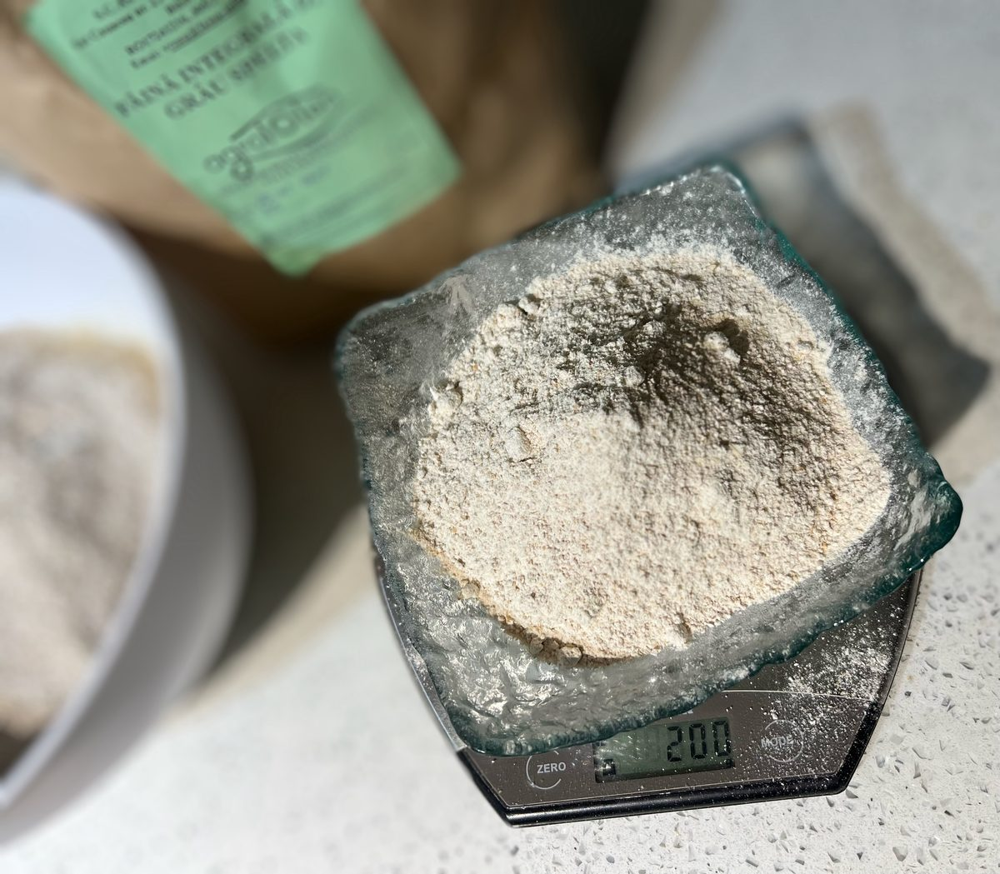
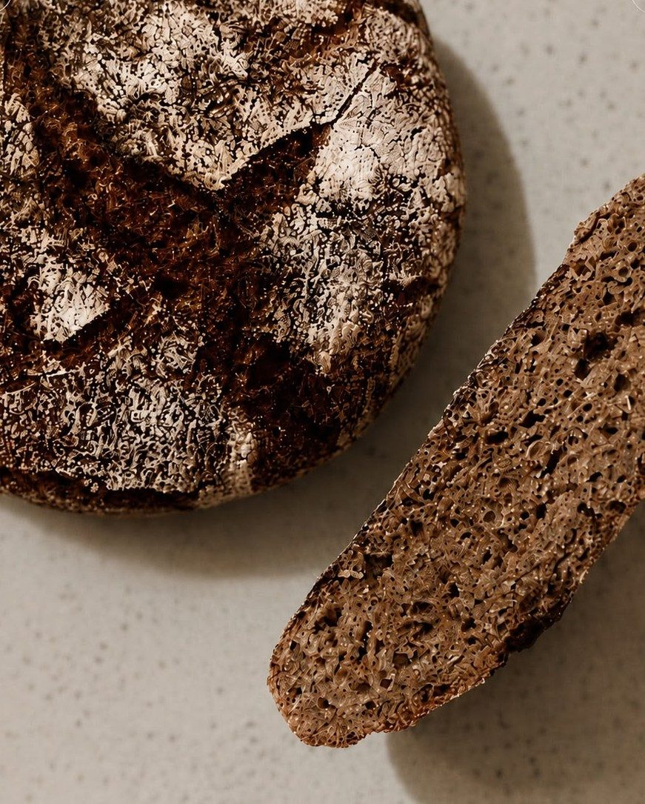
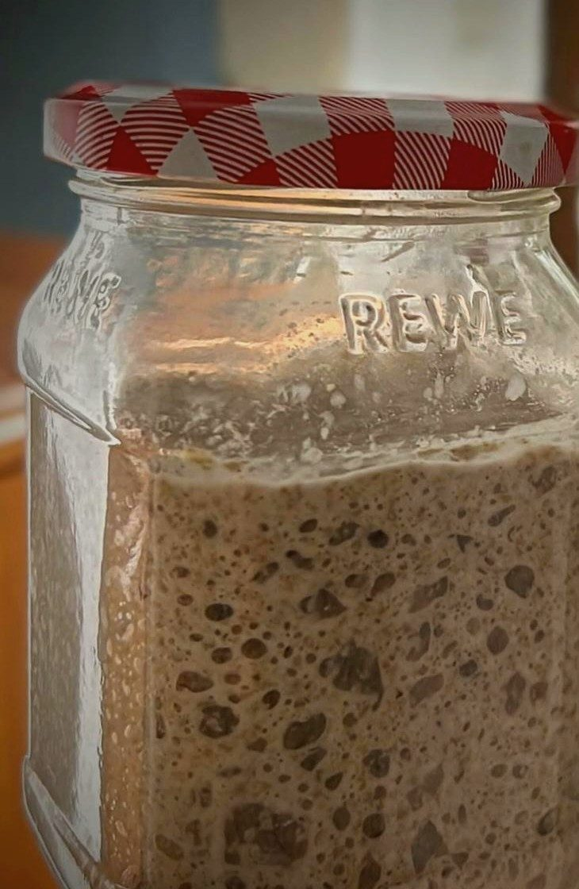
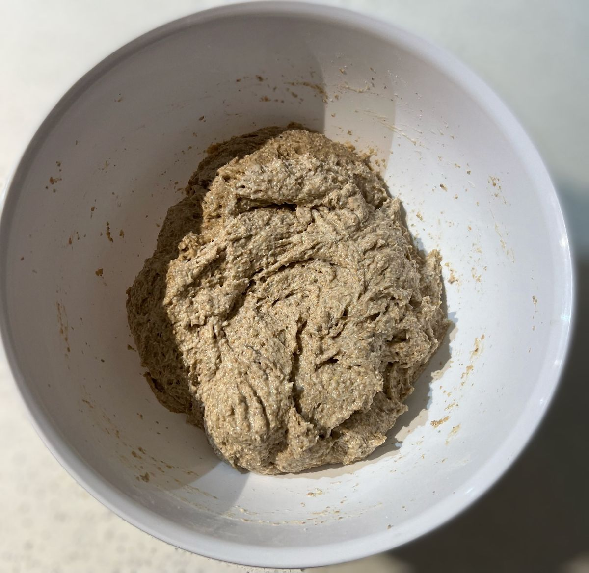
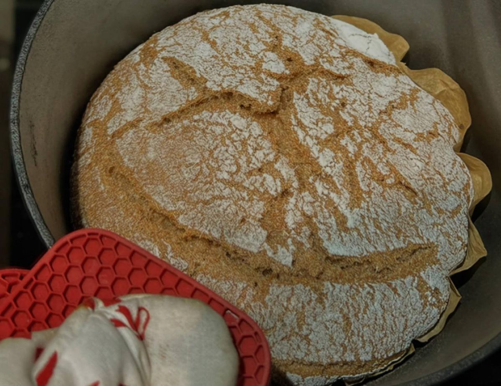
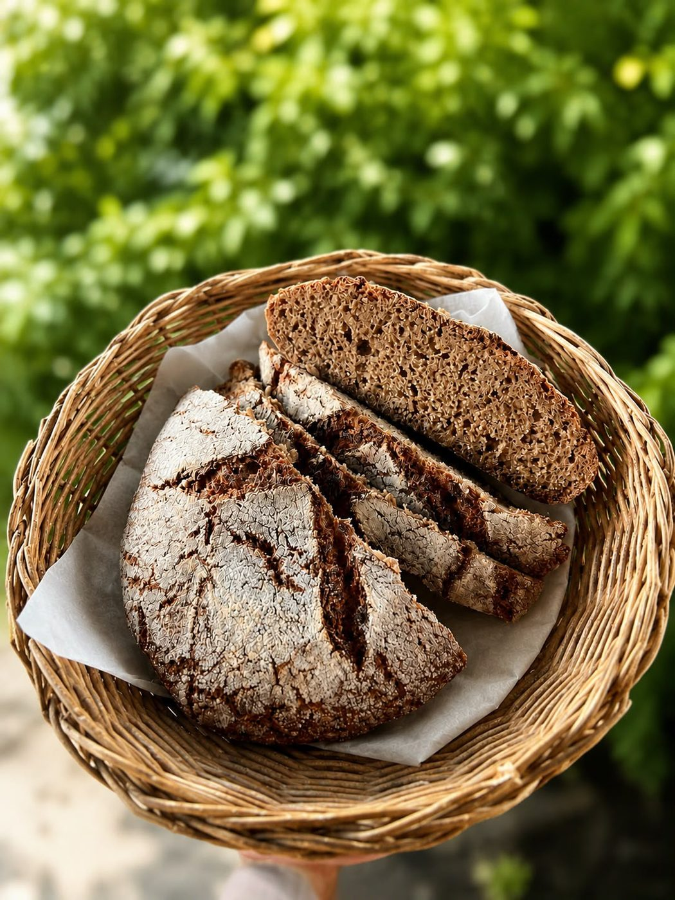

01
Maia vie
Totul pornește de la maiaua noastră, hrănită zilnic, activă și pregătită să dea aluatului profunzime și aromă.
Pâinea autentică cu maia, din făină integrală de secară și spelta
Ancestrala este pâinea autentică făcută cu maia naturală, din făină integrală de secară și spelta, coaptă lent și cu respect pentru procesul tradițional.
Nu suntem o brutărie industrială. Facem pâine în loturi mici, cu îngrijire de la maia la cuptor, pentru ca gustul să fie profund, miezul să fie dens și textura să rămână autentică.
„O pâine adevărată nu se grăbește. Se hrănește maiaua, se respectă timpul și se lasă aromele să se dezvolte.”



Totul pornește de la maiaua noastră, hrănită zilnic, activă și pregătită să dea aluatului profunzime și aromă.

Secară și spelta integrală, măcinate cu grijă, cântărite cu atenție pentru un aluat echilibrat și autentic.

Aluatul este frământat cu mâna și apoi lăsat să se maturizeze în ritm natural, fără presiuni industriale.

Se coace încet, pentru crustă crocantă și miez umed, dens, cu aroma specifică pâinii de altădată.
Pâinea de secară cu maia și pâinea țărănească fac parte din inima culturii culinare de secole. Spiritul ei se regăsește într-o pâine făcută cu răbdare, fără prescurtări și fără industrializare.
Aici se întâlnesc tradiția nemțească a pâinii de secară și moștenirea pâinii de casă românești: cereal integru, maia vie și un gust profund, autentic, care nu se uită ușor.
Cerealele integrale fac parte din alimentația sănătoasă și ajută la menținerea unei diete mai echilibrate.
OMS →Pâinea cu maia are un impact mai blând asupra glicemiei comparativ cu pâinea albă industrială.
Whole Grain →Fermentarea naturală și fibrele din cereale integrale susțin un tranzit mai ușor și o senzație de sațietate.
Capital.ro →Spelta conține proteine și minerale importante, iar secara integrală aduce fibre și sustenabilitate energetică.
Studii →Pâinea autentică cu maia, din făină integrală de secară și spelta.
📍 Rădăuți, județul Suceava
Loturi limitate, coapte manual cu respect pentru tradiție.